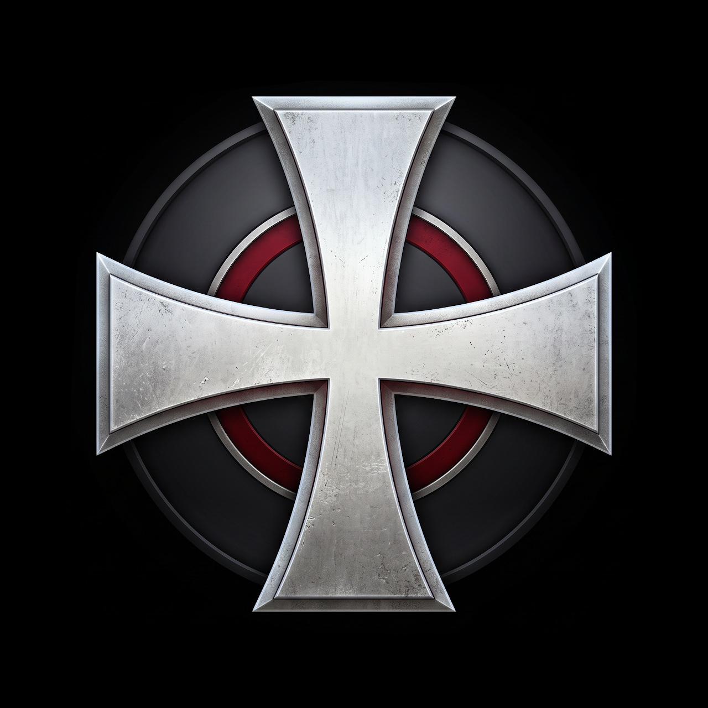
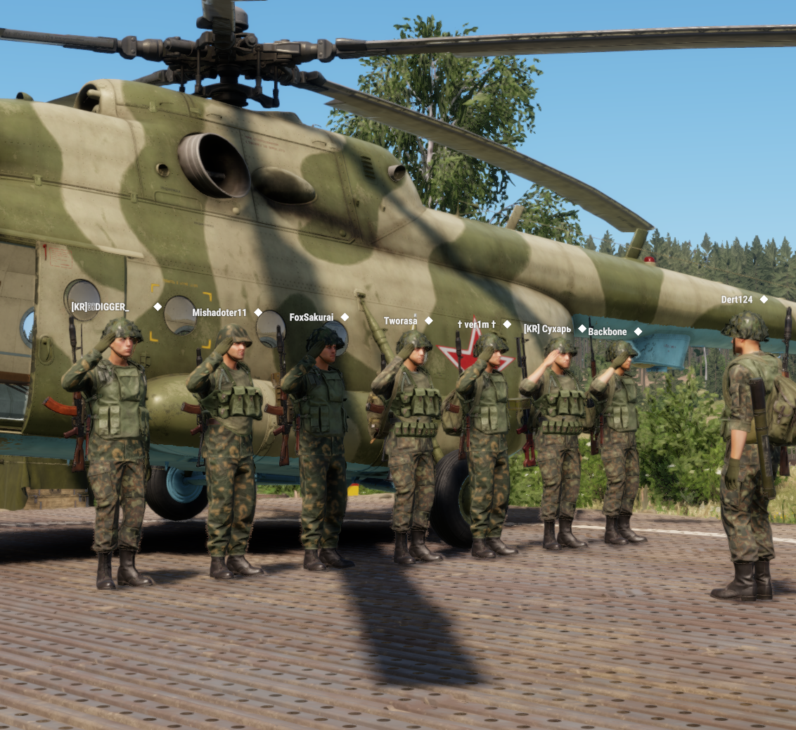

ИЗ АРХИВА ОТРЯДА
ИЗ НАШЕГО АРХИВА 06.03.2026 НАША ИСТОРИЯ
СЫГРАЛИ
РАЗОК —
И ОСТАЛИСЬ.
Сначала было двое игроков на Эвероне.
Потом из них вырос отряд «Крестоносцы».
01 — ОБ ОТРЯДЕ
Кто мы
такие.
Компания, с которой обычный вечер в игре
потом долго вспоминаешь.
В январе 2026 года Dert и Mishadoter11 случайно встретились на сервере «Рубеж» и решили поиграть вместе. Постепенно вокруг них собралась команда: пошли первые операции и тренировки, появились свои отделения, а потом и игры на других проектах.
Здесь мы собрали, как менялся отряд: с чего начинали, где спотыкались, какие решения давались тяжело и кто всё это время был рядом.
2026ГОД ОСНОВАНИЯ
ЭверонГДЕ ПОЗНАКОМИЛИСЬ
КРЕСТОНОСЦЫ / ЗНАК ОТРЯДАK / 26
01 — 10
02 — ХРОНИКА 2026
Что было
месяц за месяцем.
С первой встречи и до сегодняшних дней.
Нажми на месяц — расскажем, что тогда происходило.
ПАРА СЛОВ
Хронику мы собрали по воспоминаниям Mishadoter11. Кое-что сократили и переставили, чтобы было легче читать. Должности и названия — те, что были в то время. Споры и личные оценки сюда не попали.
03 — ФОТОАРХИВ
Мы там
были.
Кадры из игры, взятые из авторской хроники.
У каждого — свой вечер и своя история.
04 — ЛЮДИ
Без них
ничего бы не было.
Всех не перечислить, но вот те,
с кого всё начиналось.
Dert
Первый командир. Собирал людей на первые операции и проводил тренировки.
ПЕРВЫЙ КОМАНДИРMishadoter11
Админ с самого начала, потом стал командиром. Это он написал хронику, по которой сделан сайт.
АВТОР ХРОНИКИPsycho Killer
Один из главных пилотов. Сделал для отряда свой сервер, где можно спокойно тренироваться.
АВИАЦИЯKhlopyev
Пришёл в июне. Помогал развивать отряд и звал к нам новых игроков.
НАБОР ЛЮДЕЙИ ещё много кого. Подробнее про всех — в авторской хронике.
ИСТОРИЯ ЕЩЁ ПИШЕТСЯ
ИДЁМ
ДАЛЬШЕ.
Здесь — только самое главное.
Подробности и живой рассказ автора — в оригинале.